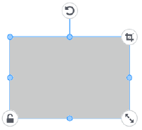

Image and Character Operations |
Select
Click (or tap) an image or a character.
When you select an object, an interface item is displayed around it.
Move, deform, rotate
 Templates dedicated for use with color printing / Templates dedicated for use with cutting
Templates dedicated for use with color printing / Templates dedicated for use with cutting

Templates dedicated for use with metal imprinting / Templates dedicated for use with foil printing

 |
: Moves the object. |
| The position is adjusted automatically to align with the top, bottom, left, or right of the other object to move. Objects can only be aligned with the same edge (example: top and top). If you want to place objects freely, clear the "GUIDELINE" check box. |
|
| : Changes the object's shape. | |
 |
: Rotates the object. |
 |
: Increases/decreases the size of the object with its aspect ratio maintained. |
 |
: Turn this on when you do not want to change the object's position or size. |
 |
: Use this to hide the parts of the image that you don't want to print (it is only displayed for images). When you turn this on, an interface item for trimming is displayed around the image.
|
 |
: Make adjustments to items such as the image brightness and configure settings related to the outline. (This is displayed for templates dedicated for use with metal imprinting and for templates dedicated for use with foil printing.) |